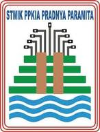

Tugas Praktikum 5 berfokus pada penguasaan navigasi antar layar, manajemen alur data, perancangan tata letak grid dua dimensi responsif, serta animasi transisi visual pada framework Flutter. Adapun tujuan khusus dari praktikum ini adalah:
GridView.builder dengan 2 kolom (crossAxisCount: 2) dan rasio aspek yang seimbang sehingga bebas dari kendala RenderFlex overflow pada beragam ukuran layar gawai.MaterialApp menggunakan initialRoute dan map routes untuk menghubungkan rute beranda ('/') dan rute detail ('/item').Item yang kompleks secara langsung antar halaman menggunakan parameter arguments pada pemanggilan metode Navigator.pushNamed(context, '/item', arguments: item).ModalRoute.of(context)!.settings.arguments as Item.Hero dengan tag pengidentifikasi unik (item.name) guna meningkatkan pengalaman visual pengguna (UX).CarCard sebagai kartu katalog dan FooterWidget sebagai identitas resmi mahasiswa ("Ainul - 23520010 • Rental Mobil Malang").go_router dengan hierarki sub-rute berparameter (detail/:id), membaca parameter URL melalui state.pathParameters, dan melakukan navigasi deklaratif menggunakan context.go().Dalam framework Flutter, navigasi antar halaman secara fundamental dimodelkan sebagai sebuah struktur data tumpukan (Stack) LIFO (Last-In, First-Out) yang dikelola oleh widget Navigator. Layar yang saat ini sedang aktif dan tampak oleh pengguna berada pada posisi puncak tumpukan (top of stack).
Navigator.push(): Menambahkan rute baru ke puncak tumpukan, menyebabkan layar baru ditampilkan menutupi layar sebelumnya.Navigator.pop(): Menghapus rute paling atas dari tumpukan, sehingga aplikasi kembali menampilkan layar yang berada tepat di bawahnya.Navigator.pushNamed(): Menambahkan rute baru berdasarkan string nama (*route name*) yang telah dipetakan sebelumnya di dalam properti routes pada root MaterialApp.Flutter menyediakan dua pendekatan utama dalam perutean halaman, yakni model imperatif klasik (Navigator 1.0) dan model deklaratif modern (Router API / GoRouter). Perbedaan esensial kedua pendekatan ini diuraikan pada tabel berikut:
| Parameter Evaluasi | Navigator 1.0 (Imperatif) | GoRouter (Deklaratif) |
|---|---|---|
| Paradigma Arsitektur | Imperatif: Pengembang menginstruksikan sistem langkah-demi-langkah kapan harus mendorong (push) atau melepas (pop) layar dari stack memori. | Deklaratif: Layar aplikasi diproyeksikan secara otomatis berdasarkan *state* URL saat ini. Tumpukan halaman disinkronkan oleh router engine. |
| Passing Objek Data | Sangat mudah dan langsung via properti arguments: Object?. Seluruh referensi objek di memori dapat langsung dikirimkan tanpa serialisasi string. |
Menggunakan pathParameters (misal: /detail/:id), queryParameters, dan properti extra untuk objek in-memory. |
| Dukungan Web & Deep Linking | Terbatas: URL pada peramban web tidak selalu sinkron dengan kondisi tumpukan. Refresh halaman web sering kali menyebabkan hilangnya objek argumen (null pointer). | Istimewa (First-Class): URL web selalu tersinkronisasi dua arah. Mendukung entri URL langsung, riwayat tombol Back/Forward browser, dan Android App Links. |
| Route Guards / Autentikasi | Logika pemeriksaan login harus ditulis berulang kali pada setiap pemanggilan push atau memerlukan konfigurasi manual di onGenerateRoute. |
Terpusat: Mendukung fungsi redirect: (context, state) yang secara otomatis mengalihkan navigasi ke rute login jika token kedaluwarsa. |
| Nested / Shell Routing | Memerlukan hierarki Navigator ganda bersarang dengan GlobalKey terpisah yang rentan terhadap kebocoran memori. |
Sangat bersih melalui widget ShellRoute atau StatefulShellRoute, memudahkan implementasi Bottom Navigation Bar persisten. |
| Kompleksitas Kode | Sangat sederhana, tidak memerlukan dependensi eksternal, cocok untuk aplikasi skala kecil hingga menengah. | Memerlukan konfigurasi paket go_router, penanganan parser URL, serta pemahaman paradigma routing modern. |
Widget Hero di Flutter mengimplementasikan konsep *shared element transition*, di mana elemen visual yang sama (seperti foto produk mobil) tampak bergerak dan bertransformasi secara mulus dari posisi awal di layar asal ke posisi baru di layar tujuan. Ketika transisi rute terjadi:
Hero pada dua rute berbeda yang memiliki nilai tag identik (dalam kasus ini: item.name).RectTween) dari ukuran dan koordinat awal di grid menuju ukuran dan koordinat header layar detail.Sistem Named Routes mengabstraksi pembuatan rute fisik dari logika bisnis halaman. Struktur rute didefinisikan secara terpusat pada file lib/main.dart menggunakan map routes: <String, WidgetBuilder>{}:
MaterialApp(
initialRoute: '/',
routes: {
'/': (context) => const HomePage(),
'/item': (context) => const ItemPage(),
},
)Platform rental mobil dikembangkan dengan mematuhi prinsip arsitektur modular, pemisahan tanggung jawab (*Separation of Concerns*), serta antarmuka modern berstandar Material 3 dengan warna aksen Indigo.
Model data Item dirancang sebagai cetak biru entitas kendaraan sewa dengan atribut lengkap yang mencerminkan kebutuhan operasional bisnis rental mobil di Kota Malang.
class Item {
final String name; // Nama resmi kendaraan
final int price; // Tarif sewa harian (Rupiah/24 Jam)
final String photo; // URL gambar mobil asli
final int stock; // Ketersediaan unit mobil di pool
final double rating; // Rating kepuasan penyewa (skala 1-5)
final String transmission; // Transmisi: Matic / Manual
final int capacity; // Kapasitas tempat duduk (kursi)
final String fuel; // Tipe bahan bakar (Bensin / Hybrid / Diesel)
final String description; // Ringkasan spesifikasi & peruntukan armada
Item({
required this.name,
required this.price,
required this.photo,
required this.stock,
required this.rating,
required this.transmission,
required this.capacity,
this.fuel = 'Bensin',
this.description = '',
});
}Sebanyak tepat 6 unit mobil populer disediakan pada katalog dengan foto asli yang akurat dari repositori Wikimedia Commons:
| No | Nama Kendaraan | Tarif Sewa | Transmisi | Kursi | Stok | Rating | BBM |
|---|---|---|---|---|---|---|---|
| 1 | Toyota Avanza 1.5 G | Rp 350.000 / hari | Matic | 7 Kursi | 5 Unit | ⭐ 4.8 | Bensin |
| 2 | Mitsubishi Xpander Ultimate | Rp 400.000 / hari | Matic | 7 Kursi | 4 Unit | ⭐ 4.9 | Bensin |
| 3 | Toyota Innova Zenix Hybrid | Rp 700.000 / hari | Matic | 7 Kursi | 3 Unit | ⭐ 5.0 | Hybrid |
| 4 | Honda Brio RS | Rp 275.000 / hari | Manual | 5 Kursi | 6 Unit | ⭐ 4.7 | Bensin |
| 5 | Toyota Fortuner VRZ 4x4 | Rp 1.100.000 / hari | Matic | 7 Kursi | 2 Unit | ⭐ 4.9 | Diesel |
| 6 | Toyota HiAce Commuter | Rp 1.250.000 / hari | Manual | 12 Kursi | 2 Unit | ⭐ 5.0 | Diesel |
Komponen ini menampilkan identitas resmi mahasiswa secara elegan pada bagian bawah layar aplikasi, dibungkus dalam SafeArea dengan warna tema surfaceContainerHighest:
import 'package:flutter/material.dart';
class FooterWidget extends StatelessWidget {
const FooterWidget({super.key});
@override
Widget build(BuildContext context) {
final theme = Theme.of(context);
return Container(
width: double.infinity,
padding: const EdgeInsets.symmetric(vertical: 12, horizontal: 16),
decoration: BoxDecoration(
color: theme.colorScheme.surfaceContainerHighest.withAlpha(120),
border: Border(
top: BorderSide(
color: theme.colorScheme.outlineVariant.withAlpha(80),
width: 1,
),
),
),
child: SafeArea(
top: false,
child: Row(
mainAxisAlignment: MainAxisAlignment.center,
children: [
Icon(Icons.directions_car_rounded, size: 18, color: theme.colorScheme.primary),
const SizedBox(width: 8),
Flexible(
child: Text(
'Ainul - 23520010 • Rental Mobil Malang',
style: theme.textTheme.bodyMedium?.copyWith(
fontWeight: FontWeight.w600,
color: theme.colorScheme.onSurfaceVariant,
),
overflow: TextOverflow.ellipsis,
),
),
],
),
),
);
}
}Komponen CarCard bertindak sebagai item grid interaktif. Foto mobil dibungkus dengan widget Hero(tag: item.name) untuk mengaktifkan animasi transisi. Selain itu, kartu dilengkapi logika formatting harga Rupiah murni, badge transmisi, rating bintang, dan ketersediaan stok:
// Potongan implementasi Hero dan Gambar pada CarCard
Hero(
tag: item.name,
child: ClipRRect(
borderRadius: const BorderRadius.vertical(top: Radius.circular(16)),
child: Image.network(
item.photo,
height: 120,
width: double.infinity,
fit: BoxFit.cover,
loadingBuilder: (context, child, loadingProgress) {
if (loadingProgress == null) return child;
return const Center(child: CircularProgressIndicator(strokeWidth: 2));
},
errorBuilder: (context, error, stackTrace) {
return Container(
height: 120,
color: theme.colorScheme.primaryContainer.withAlpha(70),
child: const Icon(Icons.directions_car_filled_outlined, size: 48),
);
},
),
),
)Halaman beranda memanfaatkan GridView.builder untuk merender katalog 2 kolom secara hemat memori (lazy virtualization). Ketika salah satu kartu diklik, sistem memicu navigasi:
// Pengiriman objek data mobil utuh melalui parameter arguments
Navigator.pushNamed(
context,
'/item',
arguments: car,
);Konfigurasi GridView menggunakan SliverGridDelegateWithFixedCrossAxisCount dengan crossAxisCount: 2 dan childAspectRatio: 0.70 menjamin kartu produk tampil proporsional tanpa risiko overflow pixel.
Pada halaman detail, data objek yang dikirim melalui arguments diekstrak secara deklaratif pada awal fungsi build():
@override
Widget build(BuildContext context) {
// Ekstraksi data yang dikirim melalui Navigator.pushNamed arguments
final item = ModalRoute.of(context)!.settings.arguments as Item;
final theme = Theme.of(context);
...
}Pasangan widget Hero(tag: item.name) disematkan pada gambar header layar detail berukuran tinggi 250px. Ketika pengguna berpindah dari beranda ke halaman ini, Flutter secara otomatis menganimasikan perbesaran gambar mobil secara mulus. Halaman ini juga menyajikan spesifikasi kendaraan (kursi, transmisi, BBM, stok), fasilitas rental, tombol interaktif 'Sewa Sekarang' dengan dialog konfirmasi, serta FooterWidget di bagian bawah.
Konfigurasi routing Navigator 1.0 didaftarkan secara terpusat pada root widget MyApp dengan tema Material 3 berwarna dasar Indigo:
class MyApp extends StatelessWidget {
const MyApp({super.key});
@override
Widget build(BuildContext context) {
return MaterialApp(
title: 'Rental Mobil Malang - Ainul (23520010)',
debugShowCheckedModeBanner: false,
initialRoute: '/',
routes: {
'/': (context) => const HomePage(),
'/item': (context) => const ItemPage(),
},
theme: ThemeData(
useMaterial3: true,
colorSchemeSeed: Colors.indigo,
),
);
}
}Pada bagian kedua praktikum, dilakukan eksplorasi terhadap package go_router untuk menguji kapabilitas perutean berbasis URL yang sangat krusial bagi aplikasi modern, terutama saat dijalankan pada lingkungan Flutter Web.
Berbeda dengan rute flat Navigator 1.0, GoRouter memungkinkan penyusunan rute bersarang (*nested sub-routes*) di mana rute anak secara alami mewarisi konteks URL rute induknya:
final _router = GoRouter(
initialLocation: '/',
routes: [
GoRoute(
path: '/',
builder: (context, state) => const HomePage(),
routes: [
GoRoute(
path: 'detail/:id',
builder: (context, state) => DetailPage(
id: state.pathParameters['id']!,
),
),
],
),
],
);Untuk berpindah ke halaman detail dengan ID dinamis, navigasi dilakukan menggunakan ekstensi metode context.go():
ListTile(
title: Text('Item ${index + 1}'),
onTap: () => context.go('/detail/${index + 1}'),
)Ketika metode context.go('/detail/3') dieksekusi, GoRouter memetakan URL tersebut ke sub-rute detail/:id, mengekstrak nilai string "3" ke dalam koleksi state.pathParameters['id'], lalu menyuntikkannya ke konstruktor DetailPage(id: '3').
http://localhost:port/#/detail/3. Pengguna dapat menyalin (*copy-paste*) tautan ini atau membagikannya ke pihak lain, dan sistem akan langsung membuka halaman detail yang bersangkutan.Berdasarkan serangkaian implementasi dan pengujian yang telah dilaksanakan pada Tugas Praktikum 5, dapat ditarik beberapa kesimpulan penting sebagai berikut:
GridView.builder dengan 2 kolom dan rasio aspek 0.70 terbukti efisien dan andal dalam menyajikan katalog armada kendaraan secara responsif, estetik, dan hemat konsumsi memori gawai.arguments pada Navigator.pushNamed dan pembacaan melalui ModalRoute.of(context)!.settings.arguments merupakan solusi paling praktis dan elegan untuk mentransfer objek kompleks (kelas Item dengan 9 atribut) dalam aplikasi mobile murni tanpa proses serialisasi JSON.Hero dengan tag pengidentifikasi unik secara signifikan meningkatkan kesan profesional dan kehalusan antarmuka aplikasi saat berpindah dari katalog ke halaman detail mobil.car_card.dart dan footer_widget.dart mematuhi standar *clean code*, mencegah duplikasi logika UI, dan memudahkan pemeliharaan kode jangka panjang.